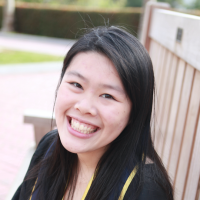

People
Natalie Stepien is a Ph.D. student in the Vision Sciences program at UC Berkeley, also advised by Dr. Orel-Bixler. She has a B.A. in Psychology with honors from the University of Chicago. Her current research investigates haptic crowding across fingers.
 Daisy Lei is a research intern at the Smith-Kettlewell Eye Research Institute. She has undergraduate degrees in Cognitive Science and Computer Science from UC Berkeley. Daisy provides crucial support for many projects, but is particularly interested in language cognition and contributes significantly to projects related to hand movements during braille reading.
Alumni
Bryce Bixler, UC San Diego undergraduate student, intern summer 2016. Robotic stimulus-delivery table and thermal transport equations.
Renpeng Zhu, UC Berkeley undergraduate student, intern fall 2014. Statistical modeling of TVI technology adoption.
Facilities
More information coming!
Equipment
More information coming!